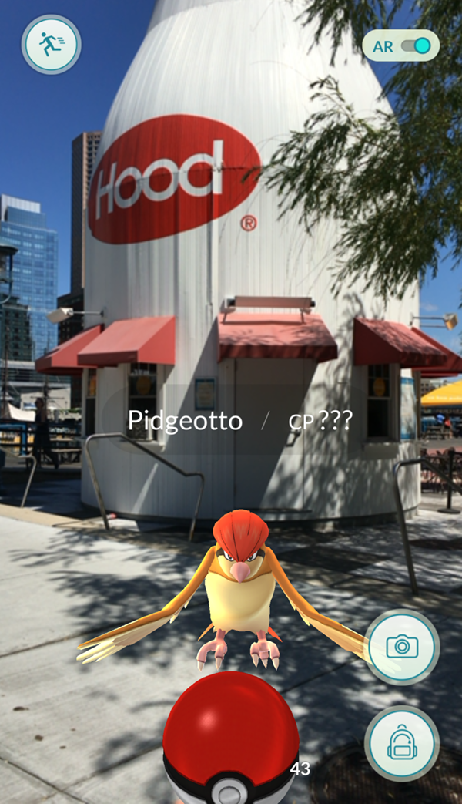

Technologies
Augmented reality is the superimposing of computer graphics over the real world. How do the graphics get displayed? At the moment, there are two ways to accomplish this: optical or video displays. Optical AR is AR that overlays graphics while still allowing the user to directly see the real world. Video AR completely replaces the user’s vision. Instead, users look through a monitor that displays a live video feed of the world with the graphics overlaid onto it (Azuma 1997).
Optical Augmented Reality
The optical version of AR is that which allows the user to directly view the real world. To accomplish this, users wear a see-through Head Mounted Display (HMD) with optical combiners placed in the user’s field of view. These surfaces that reflect projected images back into the user’s eyes, while remaining transparent so that the user can see past them (Azuma 1997).

A “Conceptual Diagram” of optical see-through HMD (Azuma 1997).
Google Glass
This device released to large fanfare in 2013 was a product of Google’s top secret development team, Google X. It was an augmented reality HMD with a small frame similar to traditional glasses, containing a small display screen in the periphery of the right eye. Released only as a prototype, it could do many tasks that a smartphone does, such as taking pictures and videos, receiving calls, and sending texts (Newman 2012). Users interacted with the apps in Glass using voice commands, or a touchpad on the right side on the temples (Glass Help).

The Google Glass, with its small transparent display screen in the user's right periphery (Doyle 2016).
Unfortunately, this hardware was not marketed properly, as it was merely a prototype but advertised as a finished product. It was released to the public in a beta stage so as to gain feedback, but little progress made after two years led to the hype dying off and confusion as to the purpose of the device. It was discontinued in 2015. However, it did jumpstart the conversation on wearable AR technology. Future versions of Glass are in the works, under new management (Bilton 2015).
Microsoft Hololens
Microsoft HoloLens is a see-through Head Mounted Display, released in March of 2016. It is able to project graphics dubbed “Holograms” in the user’s field of view, which users can then interact with using gestures, gazing, and voice commands. It has everything it needs to do this inside it: a GPU, a CPU running Windows 10, and an HPU, or Holographic Processing Unit. This secondary processor consolidates all the data from the headset’s sensors so as to take the strain off of the CPU and GPU (Microsoft Hololens).

The Microsoft Hololens (Microsoft Hololens).
In addition to visual stimuli, the Hololens contains speakers to provide a more immersive experience. They play localized sound, sound that seems like it’s coming from the location of the virtual holograms that the users see (Microsoft Hololens).
Video
The other main kind of augmented reality system is video augmented reality. This involves overlaying computer graphics over a video feed, instead of over the actual world seen by the user. Some video AR systems involve a HMD, and some involve only a monitor. Video AR HMDs are “closed-view”, meaning the user cannot see through it. Instead, the HMD is equipped with front-facing cameras, that relay the live video feed from the user’s perspective, augmented by computer graphics, onto monitors in front of the user's’ eyes. Monitor based AR is that in which the user sees the graphics on a regular screen such as a computer or cellphone (Azuma 1997; Milgram, Takemura, Utsumi, & Kishino, 1994).
{kind=link}
Apps such as Pokemon Go have taken full advantage of smartphone’s camera capabilities and processing power to create AR content (Park, 2016)
Examples of video-based AR have existed for many years. In a study by Rosenthal, et al. in 2001, researchers used video AR HMDs to perform needle biopsies. However, video based AR has come to the forefront of public attention in recent years because of the massive increase in use of smartphones. Apps such as Pokemon Go have taken full advantage of smartphone’s camera capabilities and processing power to create AR content (Park, 2016).
Works Cited
Azuma, Robert T. (1997). A survey of augmented reality. Presence, 6(4), 355-385. Retrieved from http://www.mitpressjournals.org/doi/pdfplus/10.1162/pres.1997.6.4.355
Bilton, N. (2015, February 04). Why Google Glass broke. The New York Times. Retrieved from https://www.nytimes.com/2015/02/05/style/why-google-glass-broke.html
Doyle, B. (2016, February 28). 5 reasons why Google Glass was a miserable failure. Business 2 Community. Retrieved from http://www.business2community.com/tech-gadgets/5-reasons-google-glass-miserable-failure-01462398#IyHsAbJ13HhrcabE.97
Glass help [Support center]. (n.d.). Retrieved from https://www.google.com/glass/help/
Microsoft Hololens [Product page]. (n.d). Retrieved from https://www.microsoft.com/en-us/hololens
Milgram, P., Takemura, H., Utsumi, A, & Kishino, F. (1994). Augmented reality: A class of displays on the reality-virtuality continuum. SPIE, 2531, 282-292. Retrieved from http://etclab.mie.utoronto.ca/publication/1994/Milgram_Takemura_SPIE1994.pdf
Park, H. (2016, July 12). Pokemon GO just accelerated adoption for enterprise augmented reality. Blue Hill Research. Retrieved from http://bluehillresearch.com/pokemon-go-just-accelerated-adoption-for-enterprise-augmented-reality/
Rosenthal, M., State, A., Lee, J., Hirota, G., Ackerman, J., Keller, K., . . . Fuchs, H (2001). Augmented reality guidance for needle biopsies: A randomized, controlled trial in phantoms. Springer Lecture Notes in Computer Science (LNCS), 240-248. Retrieved from http://www.cs.unc.edu/Research/MIDAG/pubs/papers/MICCAI01-rosenthal-AugReality.pdf